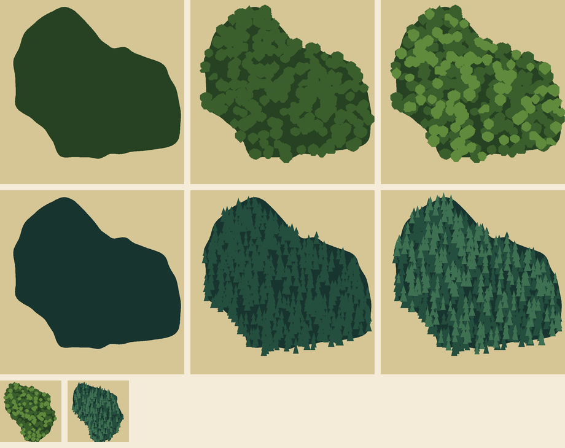
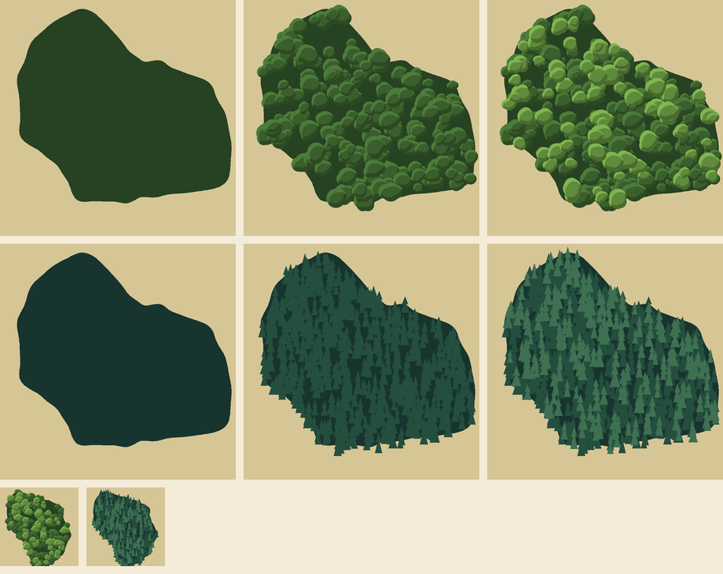
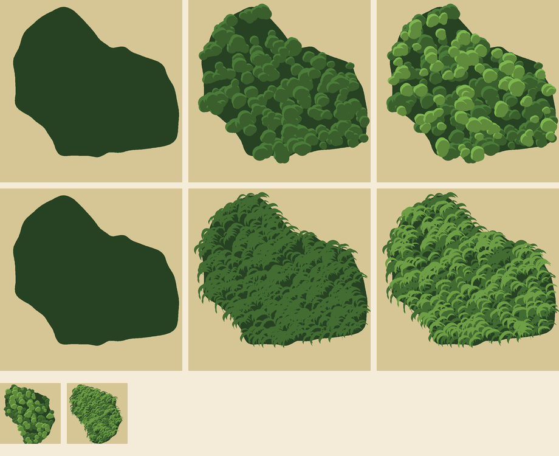
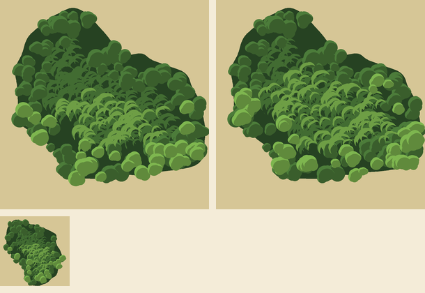

R1 森の塊の試作(11-21 06:42 ユーザーの描き方)
概要: あなたの描き方のとおり、「深緑の下地 → やや暗い影70% → 明るい影40%」で、森の塊を広葉樹と針葉樹に分けて試作しました。評価はまだ聞いていません(採用は未決)。
1. 描き方(あなたの指示)
- 暗い深緑を下地に描く。端は不規則な形にする。
- その上に、木のシルエットの「やや暗いもの」をランダムに置く。下地の70%が埋まるまで。
- その上に、もう少し明るいシルエットを、下地の40%ぶん、ランダムに置く。
- 広葉樹と針葉樹は別々に作る。
2. 試作の結果

上段=広葉樹(丸い樹冠)、下段=針葉樹(2段の三角)。左=下地、中=やや暗い影70%、右=明るい影40%。左下の小さな2枚は、地図に置く大きさ(実寸)の見え方です。
3. 私の解釈(未確認)と実測
- 明るさの順は、下地(いちばん暗い)<やや暗い影<明るい影、と解釈しました。
- 70%・40%は、下地の面積に対する各層の被覆率と解釈しました。実測(下地の面積に対する、シルエットが覆った割合): 広葉樹は 71%・42%、針葉樹は 70%・40%。
- 木は下地の中の点を中心に置き、はみ出した分は輪郭になります(端が少しぎざぎざになる)。
- 色・木の大きさ・形は、私の初期値です(広葉樹=黄みの緑、針葉樹=青みの緑)。
4. 限界・確かめられていないこと
- 目視のみ。世界地図に載せて見るのは、まだです(単色の砂色の上で確認)。
- 実寸(左下)は、小さい画面ではつぶれて見える可能性があります(iPhoneでの見え方は未測定)。
- 混交林、山の斜面、川・海岸との重なり、地形に沿った形は、まだ作っていません。
道具(第1版): mapstyle/tools/forest_mass.py
5. 第2版(11-21 06:47 ユーザー: 広葉樹のシルエットが下手・針葉樹はまし)
広葉樹は、Geminiの木の見本シートから、木1本ずつの影絵を9種切り出して使い、置くときに左右反転・大きさをランダムにしました。針葉樹は、三角の高さ・太さを3通りにしました(形はそのまま)。評価はまだ聞いていません。
切り出した広葉樹の影絵(9種):

第2版の結果(段階の見方は第2章と同じ):

- 実測(下地に対する被覆率): 広葉樹 71%・41%、針葉樹 70%・40%。
- 影絵の元は、Geminiの木の見本シート(角のある多角形の樹冠)なので、丸ではなく角張った形になります。
- 「参考絵から輪郭を取る」のうち、参考地図(62枚)からの輪郭はまだ取っていません(元絵が小さく粗いので、1本ずつの輪郭が取りにくい)。Geminiのシートだけを使いました。
- 密な塊・紅葉の大きな塊は、1本に分けられず使っていません。灰緑・桜・緑の広葉樹のみ(桜は色を変えて緑で使っています)。
- 限界: 目視のみ。9種は少ない(繰り返しが見えるかもしれない)。世界地図には未搭載。
6. 第3版(11-21 06:53 ユーザー: 大きさを少しランダムに・形は「上に丸い三日月」)
広葉樹の見えない理由(明暗がない・大きさがそろいすぎ)を、ユーザーが「それだよ」と確認。大きさを少しランダムにし、形は丸い樹冠に、上は明るい三日月・下は暗い三日月を付けました。針葉樹は第2版のまま。評価はまだ聞いていません。

- 私の解釈(未確認): 「上に丸い三日月」=丸い樹冠の上側に、光の当たる明るい三日月を付ける、と解釈しました。下側の暗い三日月(陰)は私が足しました。ご意図と違えば教えてください(例: 輪郭そのものを三日月型にする、など)。
- 樹冠は、大小の丸を3〜4個重ねた形(もこもこ)。大きさは、幅の目安 11〜24 の間でランダム(第2版は13〜20)。
- 実測(下地に対する被覆率): 広葉樹 70%・40%、針葉樹 70%・40%。
- Geminiの影絵(第2版)は使っていません(この版は自前の丸+三日月)。
- 限界: 目視のみ。世界地図に未搭載。色は初期値。三日月の明るさ・位置は私の初期値。
7. 第4版(11-21 06:55 ユーザー: 下の三日月はいらない。上だけでデフォルメ。上の形だけをばら撒く)
下の暗い三日月をやめました。「上の形だけ」の読み方が2通りあるため、2案を並べます(どちらも評価待ち)。

- 上段=案A: 丸い樹冠+上の明るい三日月だけ(下の暗い三日月なし)。
- 下段=案B: 上の三日月の形だけをばら撒く(樹冠の丸は描かない)。私の見立て: 草や羽のように見え、木には見えにくい。
- 私の見立て: 案Aのほうが、木の塊に見える。
- どちらも、大きさは少しランダム。被覆率は 70%・40%(下地に対する割合)。針葉樹は変えていません。
- 限界: 目視のみ。世界地図に未搭載。色と三日月の位置は初期値。
8. 第5版(11-21 07:01 ユーザー: 下地→周りに「上の広葉樹」→中は「下の三日月」)
あなたの指示どおりに作りました。暗い緑の下地 → 周り(縁の帯)に「上の広葉樹」(丸い樹冠+上の明るい三日月)を適度に → 中は「下の三日月」(三日月の形だけ)。評価はまだ聞いていません。

左=下地、中=暗い層、右=明るい層を重ねた完成。左下は実寸の見え方です。
- 私の解釈(未確認): 「上の」「下の」は、第4版の画像の上段(案A)と下段(案B)を指す、と読みました。「周り」は、下地の縁から幅 約14% の帯としました。
- 各層の被覆率(各ゾーンの面積に対する割合): 中は暗い層71%・明るい層40%、周りは暗い層61%・明るい層43%(周りは「適度に」として、目標を 60%・40% にしました)。
- 大きさは少しランダム(幅の目安 11〜24)。針葉樹は、この版では作っていません。
- 私の見立て: 中の三日月は羽やシダのように見え、周りの丸い木がまとまって見える。中が木に見えるかは、評価が要ります。
- 限界: 目視のみ。世界地図に未搭載。帯の幅・色・三日月の位置は初期値。
9. 第6版(11-21 07:41 ユーザー: 第5版は「随分良くなった」。中を下地にして、右(明るい層)を小さな範囲・手前の下の方に上書き)
ユーザーの評価(11-21 07:41): 第5版は「随分良くなった」。続けて、真ん中(暗い層)を下地として置き、右(明るい層)を、小さな範囲で、手前の下の方に上書きする指示。

左=中の段階(暗い層まで・下地)、中央=第6版(明るい層を下側だけに上書き)、右=第5版(明るい層を全体に)。左下は第6版の実寸です。
- 私の解釈(未確認): 指示は2回に分かれ、1回目は途中で中断されたため、2回目を採りました。「真ん中」=第5版の画像の中の段階(暗い層まで)、「右」=明るい層、「手前の下の方」=森の塊の下側(地図の手前側)と読みました。
- 明るい層は、塊の高さの下側約45%に限り、境目はゆらゆらさせました(直線にしない)。中と周りの暗い層は第5版と同じです。
- 明るい層の被覆率(その範囲の面積に対する割合): 中 42%、周り 47%(周りが目標40%より多め)。
- 私の見立て: 手前が明るく、奥が暗く沈むので、奥行きと厚みが出る。ただし、光が下から当たるように見えるかは、あなたの感覚で判断が要る。
- 限界: 目視のみ。世界地図に未搭載。範囲(45%)と境目のゆらぎは初期値。
10. 第7版(11-21 07:50 ユーザー: 明るい部分を、少し上に丸く上げて)
第6版の明るい部分の上側を、中央がいちばん高い半円状(ドーム形)に、少し上へ持ち上げました。評価はまだ聞いていません。

左=第6版(比較)、右=第7版。左下は第7版の実寸です。
- 持ち上げは、塊の高さの約16%(中央)。左右の端では、第6版と同じ高さに戻ります。
- 私の解釈(未確認): 「少し上に丸く上げて」=明るい部分の上の境目を、丸い山形に持ち上げる、と読みました。
- 明るい層の被覆率(その範囲に対して): 中 40%、周り 42%。暗い層は変えていません。
- 限界: 目視のみ。世界地図に未搭載。持ち上げの高さ(16%)は初期値。
道具: extract_stamps.py(影絵の切り出し)、forest_mass.py(森の塊)
R0 調査 / ハブへ戻る